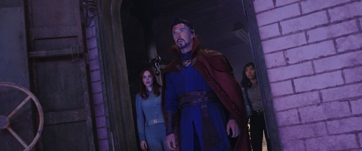
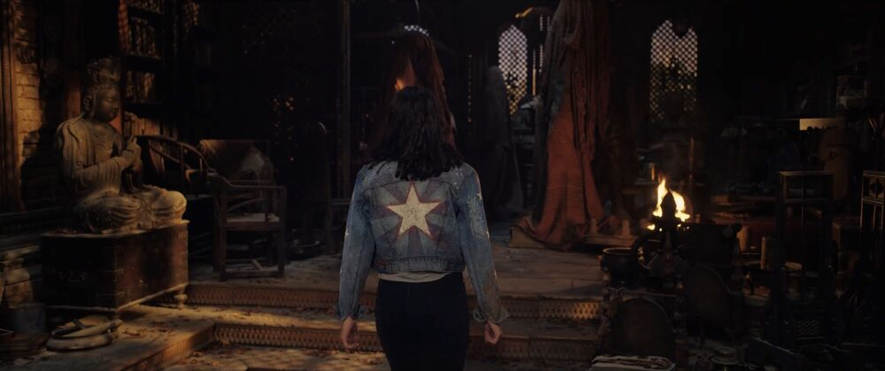
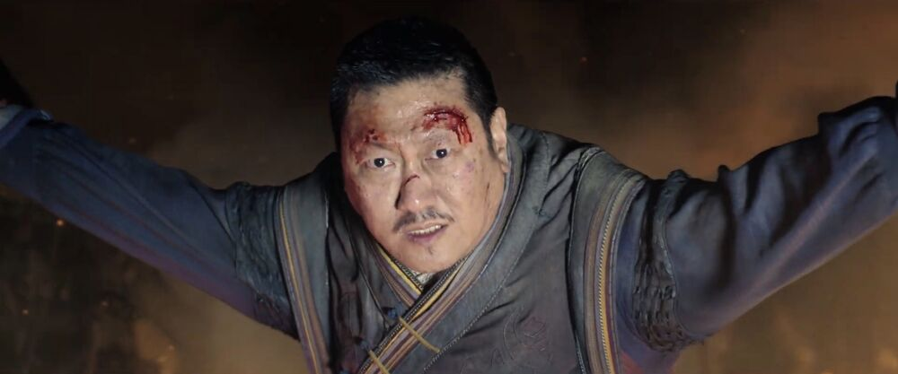
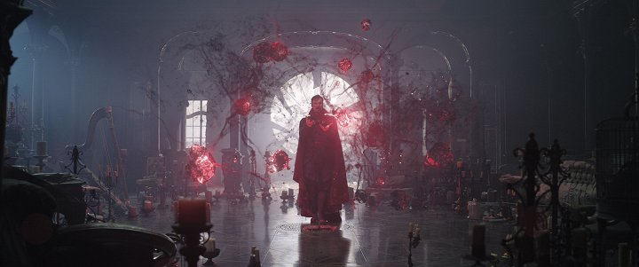
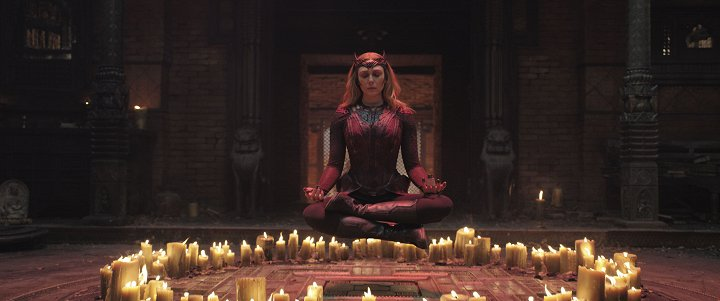
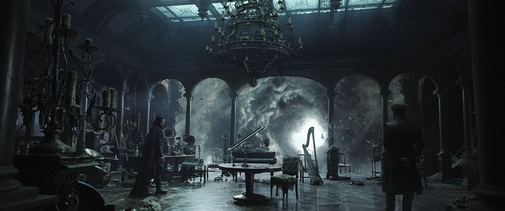
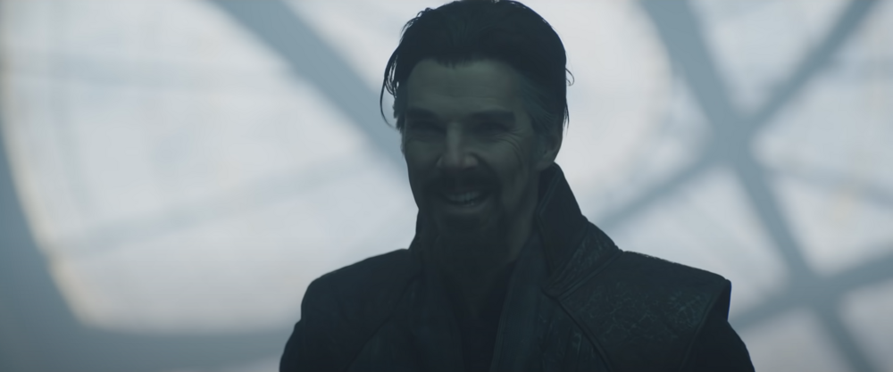

Detail filmu


| Rok vydání: | 2022 | |
|---|---|---|
| Žánr: | Akční / Fantasy / Horor | |
| Premiéra: | 05.05.2022 | |
| Délka: | - | |
| Přístupnost: | 12+ | |
| Režie | Sam Raimi | |
| Obsazení | Benedict Cumberbatch, Elizabeth Olsen, Benedict Wong, Xochitl Gomez, Chiwetel Ejiofor, Rachel McAdams, Michael Stuhlbarg ... |
Doctor Strange v multivesmíru šílenství
Doctor Strange in the Multiverse of Madness
Dr. Stephen Strange sešle zakázané kouzlo, které otevře dveře do multivesmíru, včetně alternativní verze sebe sama, jehož hrozba pro lidstvo je příliš velká i pro spojené síly Strange, Wonga a Wandy Maximoff.
Galerie






